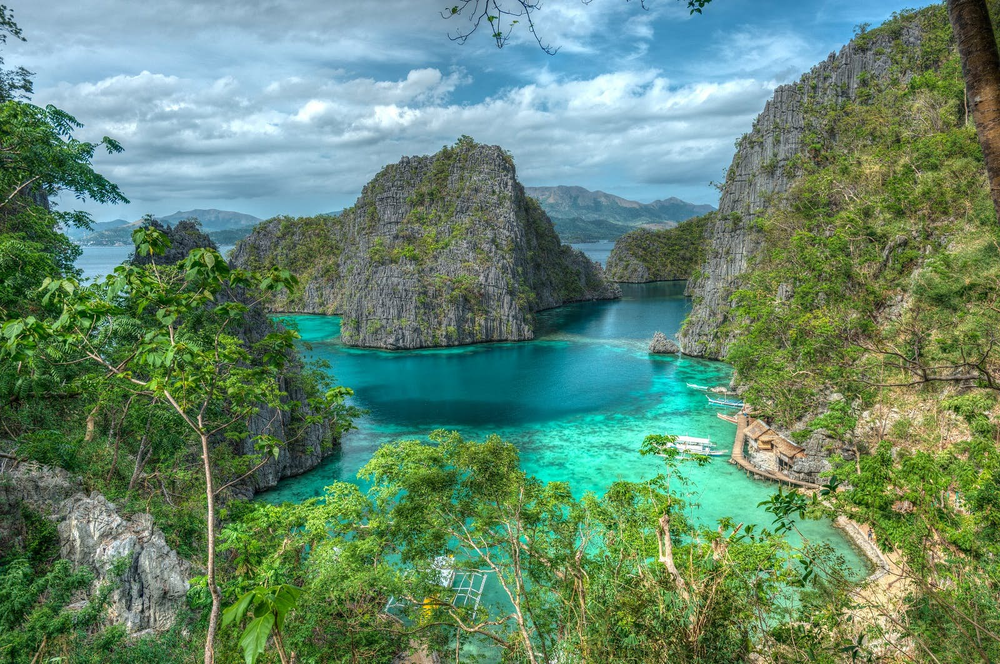

Palawan
TPalawan is long and narrow and trends northeast-southwest between the South China and Sulu seas. It has a maximum width of 24 miles (39 km) and a mountainous backbone that runs its entire 270-mile (434-km) length, with Mount Mantalingajan (6,840 feet [2,085 metres]) in the south as its highest peak.